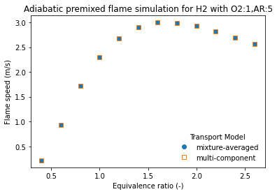
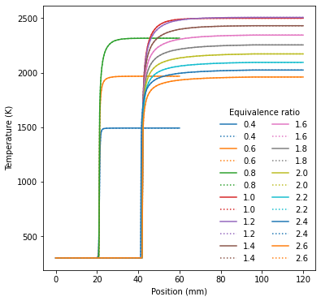

Adiabatic Flame Example¶
This example uses ctwrap for one-dimensional adiabatic premixed flame simulations defined by the simulation module adiabatic_flame (ctwrap.modules.adiabatic_flame).
1. Function/Class Definitions¶
[1]:
import cantera as ct
import ctwrap as cw
import json
2. Simulations¶
2.1 Create Simulation Object¶
Uses a module in the modules folder. Modules do not have to depend on ctwrap.
[2]:
sim = cw.Simulation.from_module(cw.modules.adiabatic_flame)
sim
[2]:
<ctwrap.simulation.AdiabaticFlame at 0x250ffa80948>
2.2 Create Simulation Handler¶
[3]:
fname = '../../yaml/adiabatic_flame.yaml'
s = cw.SimulationHandler.from_yaml(fname, verbosity=1)
s
Simulations for entry `upstream.phi` with values: [0.4, 0.6, 0.8, 1.0, 1.2, 1.4, 1.6, 1.8, 2.0, 2.2, 2.4, 2.6]
[3]:
<ctwrap.simulation.SimulationHandler at 0x250ff7ee988>
2.3 Run Simulation Tasks in Parallel¶
[4]:
%%time
s.run_parallel(sim, verbosity=0)
Wall time: 2.54 s
[4]:
True
3. Create Graphical Output¶
[5]:
import h5py
import matplotlib.pyplot as plt
import matplotlib as mpl
col = mpl.rcParams['axes.prop_cycle'].by_key()['color']
n_col = len(col)
3.1 Load Data¶
[6]:
data = h5py.File(s.output_name, 'r')
[7]:
data.keys()
[7]:
<KeysViewHDF5 ['upstream.phi_0.4<mix>', 'upstream.phi_0.4<multi>', 'upstream.phi_0.6<mix>', 'upstream.phi_0.6<multi>', 'upstream.phi_0.8<mix>', 'upstream.phi_0.8<multi>', 'upstream.phi_1.0<mix>', 'upstream.phi_1.0<multi>', 'upstream.phi_1.2<mix>', 'upstream.phi_1.2<multi>', 'upstream.phi_1.4<mix>', 'upstream.phi_1.4<multi>', 'upstream.phi_1.6<mix>', 'upstream.phi_1.6<multi>', 'upstream.phi_1.8<mix>', 'upstream.phi_1.8<multi>', 'upstream.phi_2.0<mix>', 'upstream.phi_2.0<multi>', 'upstream.phi_2.2<mix>', 'upstream.phi_2.2<multi>', 'upstream.phi_2.4<mix>', 'upstream.phi_2.4<multi>', 'upstream.phi_2.6<mix>', 'upstream.phi_2.6<multi>']>
[8]:
data.attrs.keys()
[8]:
<KeysViewHDF5 ['defaults', 'variation']>
[9]:
var = json.loads(data.attrs['variation'])
var
[9]:
{'entry': 'upstream.phi',
'values': [0.4, 0.6, 0.8, 1.0, 1.2, 1.4, 1.6, 1.8, 2.0, 2.2, 2.4, 2.6],
'tasks': ['upstream.phi_0.4',
'upstream.phi_0.6',
'upstream.phi_0.8',
'upstream.phi_1.0',
'upstream.phi_1.2',
'upstream.phi_1.4',
'upstream.phi_1.6',
'upstream.phi_1.8',
'upstream.phi_2.0',
'upstream.phi_2.2',
'upstream.phi_2.4',
'upstream.phi_2.6']}
[10]:
default = json.loads(data.attrs['defaults'])
default
[10]:
{'upstream': {'T': '300. kelvin',
'P': '1. atmosphere',
'phi': 0.55,
'fuel': 'H2',
'oxidizer': 'O2:1,AR:5'},
'chemistry': {'mechanism': 'h2o2.yaml'},
'domain': {'width': '30 millimeter'}}
[11]:
up = default.get('upstream')
[12]:
phi = var.get('values')
[13]:
mix = {k.split('<')[0]: dict(data[k]['flame']) for k in data if 'mix' in k}
mlt = {k.split('<')[0]: dict(data[k]['flame']) for k in data if 'multi' in k}
3.2 Plot¶
Plot flame speeds and temperature profiles
[14]:
# create figure
fig, ax = plt.subplots(1)
# plot results
u_mix = [ mix[t]['velocity'][0] for t in mix]
u_mlt = [ mlt[t]['velocity'][0] for t in mlt]
ax.plot(phi, u_mix, marker='o',
linestyle='none', label='mixture-averaged')
ax.plot(phi, u_mlt, marker='s',
markerfacecolor='none',
linestyle='none', label='multi-component')
# add title/axis labels
ax.set_xlabel('Equivalence ratio (-)')
ax.set_ylabel('Flame speed (m/s)')
ax.set_title('Adiabatic premixed flame simulation for {} with {}'.format(up['fuel'],up['oxidizer']))
# add legend
leg = ax.legend(loc='lower right',#prop={'size':11},
title='Transport Model') # % mech)
_ = leg.draw_frame(False)

[15]:
# create figure and adjust size
fig, ax = plt.subplots(1)
fig.set_size_inches(6.,6.)
# plot results
for i, key in enumerate(mix.keys()):
df = mix[key]
label = key.split('_')[1]
ax.plot(1000*df['grid'][:], df['T'][:], color=col[i % n_col],
linestyle='-', label=label)
df = mlt[key]
ax.plot(1000*df['grid'][:], df['T'][:], color=col[i % n_col],
linestyle=':', label=label)
# add title/axis labels
ax.set_xlabel('Position (mm)')
ax.set_ylabel('Temperature (K)')
# add legend
leg = ax.legend(loc='lower right',#prop={'size':11},
title='Equivalence ratio', ncol=2) # % mech)
_ = leg.draw_frame(False)

[ ]: